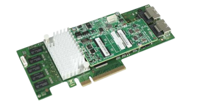

Controlador RAID
Un controlador RAID es una tarjeta o chip ubicado entre el sistema operativo y una unidad de almacenamiento (generalmente un disco duro).
¿Qué hace un controlador RAID?
Virtualiza las unidades en diferentes grupos con características específicas de protección de datos y redundancia. La interfaz front-end normalmente se comunica con el servidor a través de un adaptador basado en host (HBA). El backend se comunica con el medio de almacenamiento subyacente y lo administra; generalmente es ATA, SCSI, SATA, SAS o Fibre Channel.
Los controladores RAID se clasifican por las múltiples características que incluyen tipos de unidades (como SATA o SAS), niveles RAID específicos y el número de puertos y unidades compatibles. El controlador RAID no es un controlador de almacenamiento. El controlador de almacenamiento proporciona el disco activo al sistema, mientras que el controlador RAID actúa como caché de RAM y proporciona funciones RAID.
Controladores RAID de hardware VS software
- Basado en hardware: Los controladores RAID de hardware son dispositivos dedicados diseñados para gestionar las configuraciones RAID de un conjunto de discos. Existen dos variantes principales: tarjetas controladoras RAID y RAID en chip interno.
- Tarjetas controladoras RAID: Son dispositivos físicos que se insertan en las ranuras PCIe o PCI-X de una placa base. Estas tarjetas incorporan su propio procesador RAID y procesador de E/S con interfaz de unidad independiente, lo que les permite administrar y controlar completamente los discos conectados.
- RAID en chip: Esta opción más económica implica la integración de un chip RAID en la placa base. Este chip único incluye una interfaz de host, una interfaz de E/S para los discos duros, un procesador RAID y un controlador de memoria.
- Basado en software: Los controladores RAID de software operan desde el sistema host en lugar de un dispositivo físico independiente
- RAID solo de software: Este enfoque utiliza las funciones RAID nativas del sistema operativo anfitrión y se considera la opción más económica. El cálculo de RAID y la gestión de discos se realizan a través de la aplicación basada en el host,utilizando controladores nativos de host bus adapter (HBA) o interfaces de E/S para comunicarse con las unidades de almacenamiento.
- RAID híbrido de hardware/software: Este enfoque combina las funciones de BIOS RAID proporcionadas por la placa base o un HBA con un componente de hardware adicional. Esta tecnología híbrida agrega una capa adicional de administración y, aunque aumenta el costo en comparación con el RAID solo de software, ofrece protección contra errores de inicio del sistema operativo.
Diferentes niveles RAID
- RAID 0 (Striping): Este nivel divide los datos en dos o más discos, lo que mejora significativamente el rendimiento. Sin embargo, no proporciona redundancia, lo que significa que si un disco falla, se pierden todos los datos.
- RAID 1 (Duplicación): RAID 1 utiliza dos o más discos para duplicar los datos, lo que proporciona una copia exacta en cada disco. Esta duplicación ofrece redundancia de datos y conmutación por error si uno de los discos falla.
- RAID 5/6 (Striping con paridad/doble paridad): Estos niveles combinan el rendimiento de RAID 0 con la redundancia de RAID 1. Utilizan paridad (o doble paridad en RAID 6) para proteger los datos. Estos niveles son eficaces y eficientes en cuanto a capacidad.
- RAID 10 (Striping y Mirroring): RAID 10 es una combinación de RAID 0 y RAID 1. Los datos se dividen en dos discos y se espejan en otros dos. Esto proporciona un alto rendimiento y redundancia, aunque es más costoso en términos de almacenamiento.